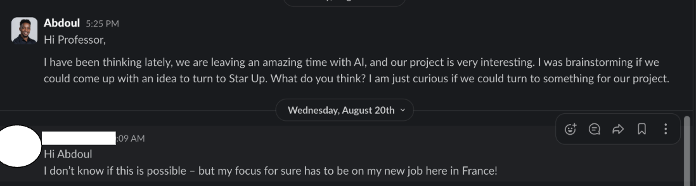
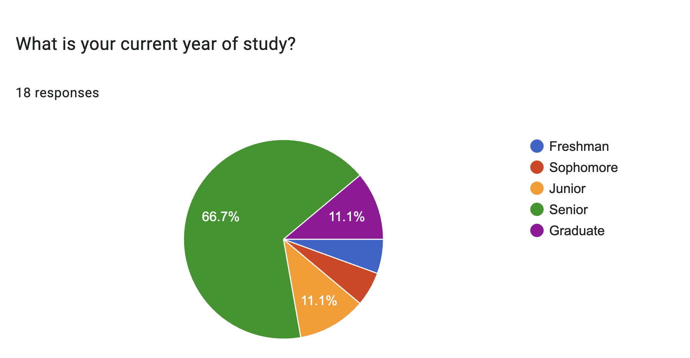
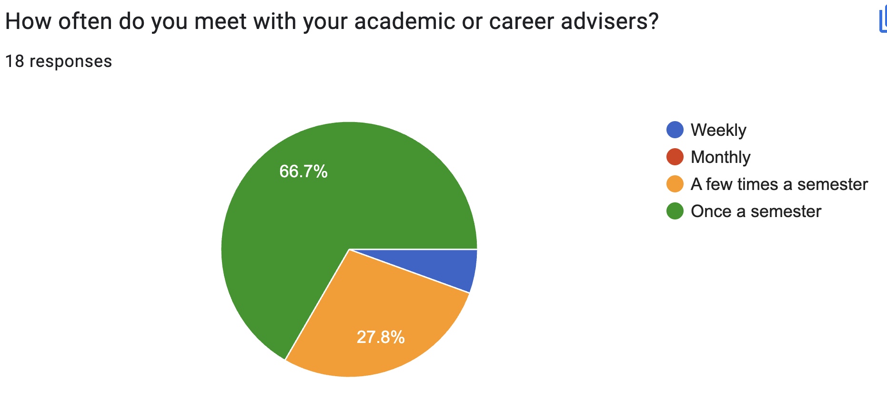
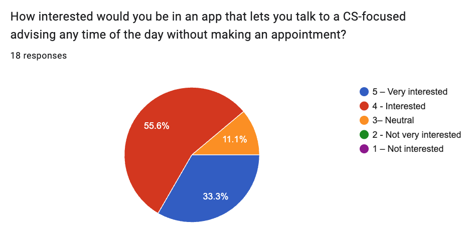
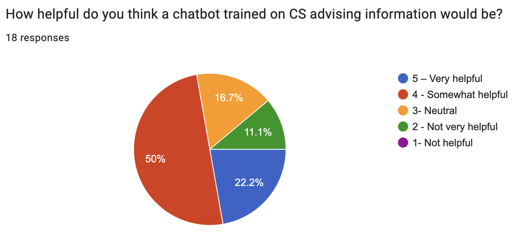

From Startup Dreams to User Research Reality
Before I took the class, I had been thinking of starting my own startup company. I even reached out to my Principal Investigator (PI) to get an idea if we could switch our research to a startup company. Because we are solving a real problem, unfortunately, my PI moved to Europe for personal reasons, as you can see in our chat:

My conversation with my PI about potential startup collaboration
Still, I wasn't discouraged. I knew I would pursue the idea when the right opportunity came. When the semester began, I felt energized during the first week of HCI. To me, HCI felt like a mini Y Combinator: a chance to ignite my idea, collaborate with a small team, and engage with stakeholders such as Dr. Sanika Doolani. That's when I proposed my project, PathFinder, which I introduced in my first blog.
In this second blog, I'll take a deeper dive into my User Research journey. As a completed undergraduate at SFSU, I've experienced firsthand the challenges of planning courses, dealing with prerequisites, limited class availability, and navigating advisor access. But I knew my own story couldn't be the only perspective, and I didn't want my personal frustrations to bias the app design. To test my idea, I turned to other students.
My Research Approach
I focused on diversity in my participants, including undergraduates, transfer students, and graduate students to better understand how they plan their courses and what obstacles they face. My goal was to identify unmet needs and opportunities for innovation that could guide the design of PathFinder, ensuring it is student-centered, reduces stress, and helps students stay on track for timely graduation.
To achieve this, I used multiple UX research methods, starting with a survey. The survey allowed me to collect quantitative insights and validate patterns across a broader group of students. Here's what I discovered:
Participant Demographics
I collected responses from 18 students across different stages of study. The majority were seniors (67%), with smaller groups of juniors, graduates, sophomores, and freshmen. This gave me perspectives from students close to graduation as well as those earlier in their academic journey.

Distribution of survey participants by academic year
Advising Access Challenges
When asked about advising frequency, two-thirds of students (67%) reported meeting their advisor only once per semester, while another 28% met just a few times per semester. This shows that many students lack regular advising, leaving room for confusion about prerequisites and graduation planning.

Frequency of meetings with academic or career advisers
Strong Interest in Technology-Driven Solutions
Students showed strong enthusiasm for technology-driven advising support. Over 88% of respondents said they were interested or very interested in an app that would provide CS-specific advising without requiring appointments.

Student interest in an app for CS-focused advising without appointments
AI-Powered Chatbot Potential
Similarly, students viewed a chatbot trained on advising information as a helpful resource. More than 70% found it helpful or very helpful, while only a small fraction were neutral or doubtful. This suggests that AI-driven advising tools could complement human advisors and improve accessibility.

Perceived helpfulness of a chatbot trained on CS advising information
Key Insights That Shaped PathFinder
These findings were eye-opening and directly influenced how I approached PathFinder's design:
- Accessibility Gap: The limited advisor access confirmed that students need alternative ways to get guidance, especially for quick questions about prerequisites and course planning.
- Technology Readiness: The overwhelming interest in tech solutions showed that students are ready to embrace digital tools for academic planning.
- AI Acceptance: The positive reception to chatbot technology validated my decision to include AI-powered features in PathFinder.
- Diverse Needs: Having participants from different academic levels helped me understand that the app needs to serve both new students and those nearing graduation.
Beyond the Data: Personal Reflections
Conducting this research taught me that user research isn't just about collecting data—it's about understanding people's real struggles and designing solutions that truly help. The process of talking to students, analyzing their responses, and seeing the patterns emerge made me realize how much I had been making assumptions about what students needed.
This experience reinforced my belief that good design comes from understanding users deeply, not from building what we think they want. It also showed me the power of combining quantitative data (surveys) with qualitative insights to create a complete picture of user needs.
Looking Forward
Armed with these insights, I'm now more confident than ever that PathFinder addresses a real need. The research validated my initial instincts while also revealing new opportunities I hadn't considered. Most importantly, it reminded me that the best solutions come from listening to the people who will actually use them.
In my next blog, I'll share how these research findings are shaping the actual design and development of PathFinder, and how I'm applying HCI principles to create an interface that students will love to use.